Tatooine and other real-life scifi worlds?
A blog post of my recent Astronomy on Tap talk


I was born loving space, I'm pretty sure. My earliest memories are pouring over kid space books. I don't know why, but it has scratched that itch for me since before I have memories. I was a kid in the 80s and 90s, when there was some EXCELLENT (and not so excellent...) sci-fi happening. I remember watching Star Wars for the first time when I was a kid sick on the couch, and making my mom go back to the video store for the next episode as soon as it was finished. As a family we gathered around the TV on Saturday nights for the latest episode of Star Trek The Next Generation. My parents got me a subscription to Star Date magazine, and a little hobby telescope. In high school, Deep Space Nine and Babylon 5 blew my mind. The strong female leads in both those shows were strong drivers in my decision to join the Navy and be a pilot like them (I did join the Navy, but did not become a pilot, thank God).
So when I decided to go back to astronomy and get a PhD, planets were the only thing I wanted to study, I knew right away. I think Star Trek had a non-neglible influence on that decision too. Now I study planet formation and evolution using the direct imaging technique, where we actually ry to observe planets directly rather than detecting them indirectly, as most are discovered.
I gave a talk at our local Astronomy on Tap Tucson show in Dec 2021 about some science fiction worlds and how they compare to real-life known exoplanets. This post is to summarize the talk and show you a bit about what we know (and don't know) about exoplanets!
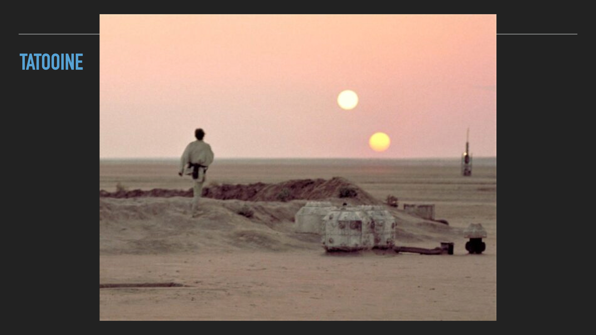
This is that iconic shot of the twin setting suns of Tatooine from Star Wars Episode 4. Given the size and arrangement of the stars, I infer that Tatooine orbits around both stars, which themselves orbit their common center of mass; this is called a circumbinary planet. At the time of Star Wars release, long before any planets were actually detected, it was believed that a circumbinary planet would likely be impossible. It was thought the gravity of the three bodies would be too chaotic, and the planet would eventually be disrupted and kicked out into space. But now we’ve confirmed detection of almost 5000 planets, including some circumbinaries. If the separation between the stars is much much smaller than between the star and the planet, the planet sees the gravity of the two stars not really very different from one star. So something like Tatooine can really exists. And we have found some!
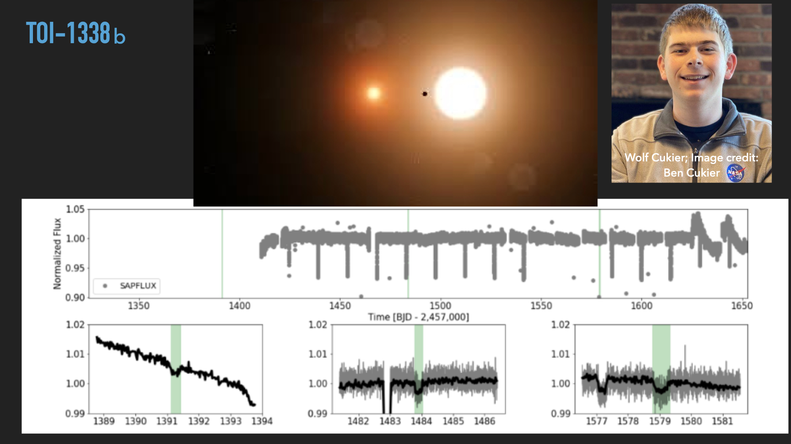The Transiting Exoplanet Survey Satellite, TESS, recently spotted a circumbinary planet TOI-1338 b. TESS detects planets using the transit method,
where the satellite stares at a star for a long time, watching for dips in the light output of the star, called the light curve, that indicates
that something passed in front of it. In the case of TOI-1338, it’s what’s called an eclipsing binary. When the fainter star passes in front of
the brighter star, the light curve dips some, because the part of the bright star is blocked by the fainter one. TOI-1338 was already known as an
eclipsing binary before TESS, but a high school intern named Wolf Cukier noticed another dip with a different period, which turned out to be a
circumbinary planet! This is the TESS light curve for TOI-1338. We can see these regular periodic dips here, that’s the eclipsing binary. The
green indicates the planet transit signal occurring at a different interval. These are close ups on the planet transit. It’s much shallower
because the planet is much smaller than the other star.
TOI-1338 b is a Neptune-like world that orbits on a 95 day period around the two stars. It’s about 33 times the mass of Earth, and its distance
from the stars is something like between a Venus and Mercury like distance. The primary star, TOI-1338 A, is a similar mass to our sun, and the
secondary TOI-1338 B is about a third the size of our sun. They orbit each other every 15 days. Interestingly, the orbit of the planet is aligned
on the same plane as the two stars, suggesting they formed out of the same disk of gas and dusty material. We can’t know what the surface of
TOI-1338 b is, but it is most likely Neptune-like, so sorry it’s not exactly a Tatooine.
Another known circumbinary planet is Kepler-16b. Kepler was another transiting planet searching satellite like TESS, in fact TESS was the
follow-on the Kepler. Kepler discovered literally thousands of planets, and even though the mission is over, the data it collected is
still be analyzed and it will continue to yield planets for a while to come.
Kepler-16 is another eclipsing binary system like TOI-1338. It’s often compared directly to Tatooine!
It’s about the same separation from the two stars as Venus is from our sun. Because the stars are both smaller than our sun, being at
about the same distance as Venus puts Kepler-16b right on the edge of the “habitable zone”.
The habitable zone refers to the region of separation from the host star for which the equilibrium temperature would be capable of supporting
liquid water on the surface. It DOES NOT mean HABITABLE. For context, Venus is just on the inner edge and Mars is just on the outer edge
of the Sun’s habitable zone, and we can’t live on either! The location of the habitable zone depends on the type of star.
Hotter stars will have HZs further out, cooler stars closer in. Because Kepler-16 b’s host stars are cooler than the sun, being at about the same
separation as Venus from our Sun puts it near the outer edge of the habitable zone for its host stars. Unfortunately for our purposes it is likely
to be a gas giant, so sorry still not an actual Tatooine.
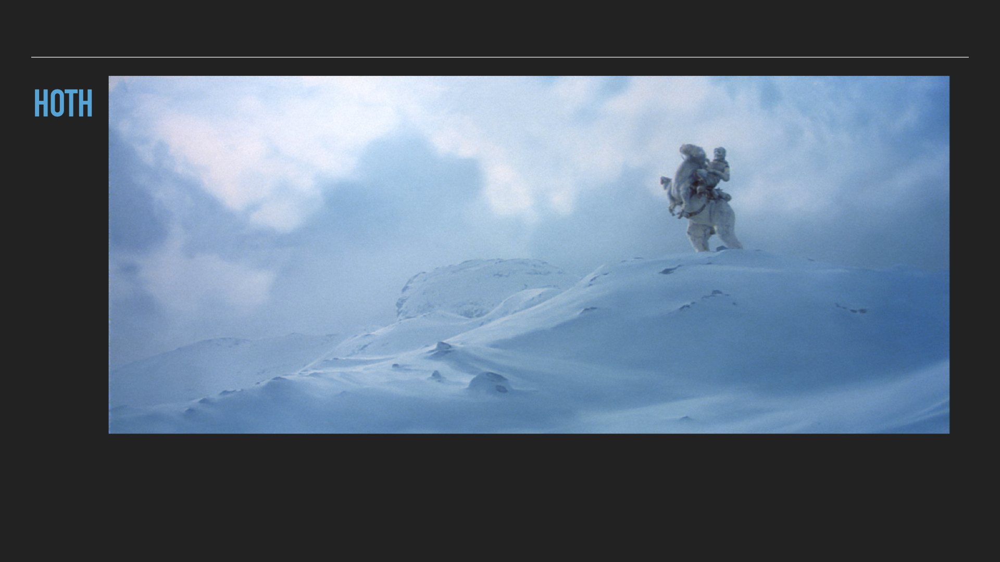 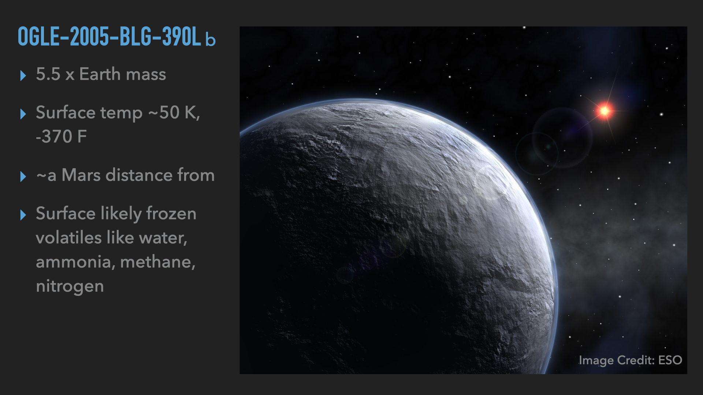
Ok keeping with the Star Wars theme, let's talk about Hoth, the frozen ice world of Star Wars Episode 5, the Empire Strikes Back. So what about ice
worlds in real life? Well, a good candidate is OGLE-2005-BLG-390Lb. It’s a super-Earth with a mass about 5 times Earth mass at about the same
distance as Mars from a cool star, either a red dwarf or a white dwarf. Because it’s kinda far from a cool star, The surface temperature is estimated
to be ~50K, or -370F! Similar to surface temperature of Pluto actually. The surface is unknown, but is likely made of frozen solid gases like water,
ammonia, methane, nitrogen. At these temps water acts like rock does on Earth, which we’ve observed on Pluto. Pluto has water rocks and ice floes of
nitrogen glaciers! This is an image of the surface of Pluto from the New Horizons space crafts. These are water ice mountains and a nitrogen ice glacier.
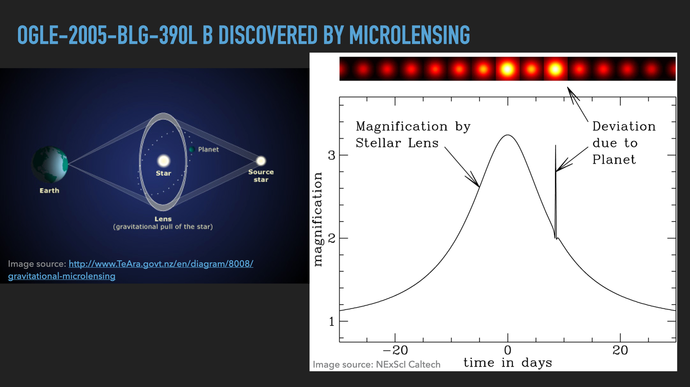
The reason we’re not quite sure of the type of star this planet orbits is because of how it was discovered. Gravitational microlensing exploits general
relativity and the bending of spacetime due to an object’s gravity to detect planets. When an object with gravity passes between you and a distant star,
that object’s gravity bends the light rays in the same way a lens does, and it magnifies the far away object, this is called gravitational lensing.
If a star lenses a far away star, and the lensing star happens to have a planet, there will be a tiny amount of extra lensing due to the planet’s gravity,
as illustrated in this graphic. The amount of lensing depends on the mass of the star and planet, so we can learn the mass of the two objects, but
unfortunately not much else.
A really amazing ice world is Gliese 436 b. It’s a super Earth at 20 times Earth mass, and it’s separation from the star is only 0.03 time that of Earth,
or 3% of the separation of Earth from the sun. It’s so close that the tides from the host star cause even more internal heating, and a greenhouse effect
from the atmosphere further heats the surface.
It’s estimated that the surface temperature is 712 K, or 822 F. But wait how can it be an ice world at those temperatures? It’s enormous mass creates
huge pressure inside the outer envelope, and the water is compressed into solid form from the huge pressure – hot ice!
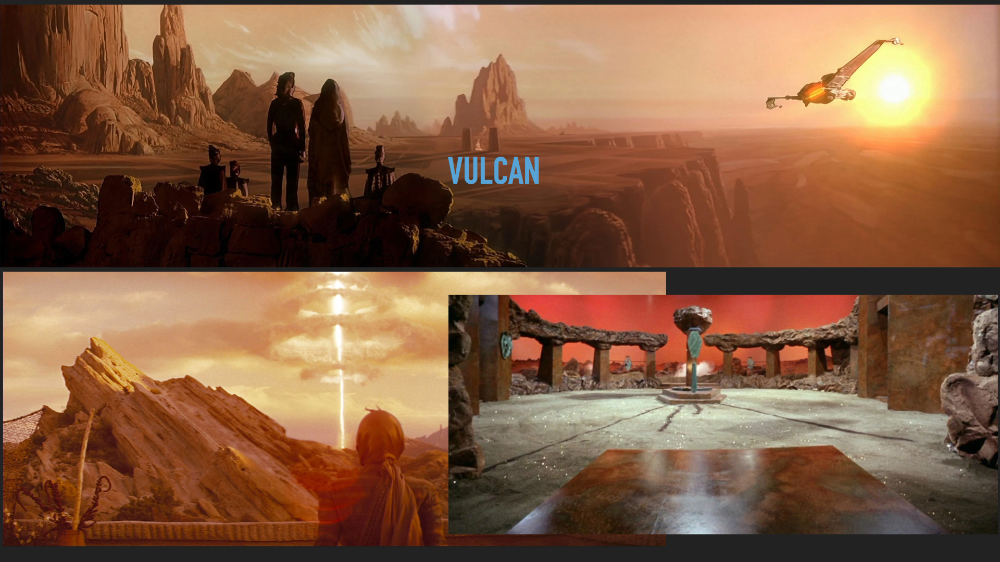
Ok let’s leave Star Wars. Let’s talk about Vulcan! The homeworld of the Vulcan race from Star Trek. At the top we’ve got some of the opening
scenes from Star Trek IV: The Voyage Home; below that is the destruction of Vulcan in the Kelvin timeline from Star Trek (2009); and next to that
is Vulcan as first realized in the original series episode Amok Time. In the show Vulcan is a hot arid world with less atmosphere than Earth.
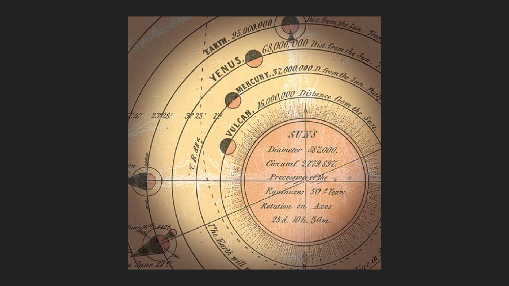
The idea of Vulcan actually goes back to 19th century astronomers who noticed slight irregularities in the orbit of Mercury. They hypothesized
the existence of another planet interior to the orbit of Mercury that could cause it, and called it Vulcan after the Roman god of fire, because
it would be so hot. They never found the planet however, because it isn’t there. The slight irregularities of Mercury’s orbit are nicely explained
by the curvature of space time due to being so close to the Sun’s mass, and served as one of the first direct tests of general relativity!
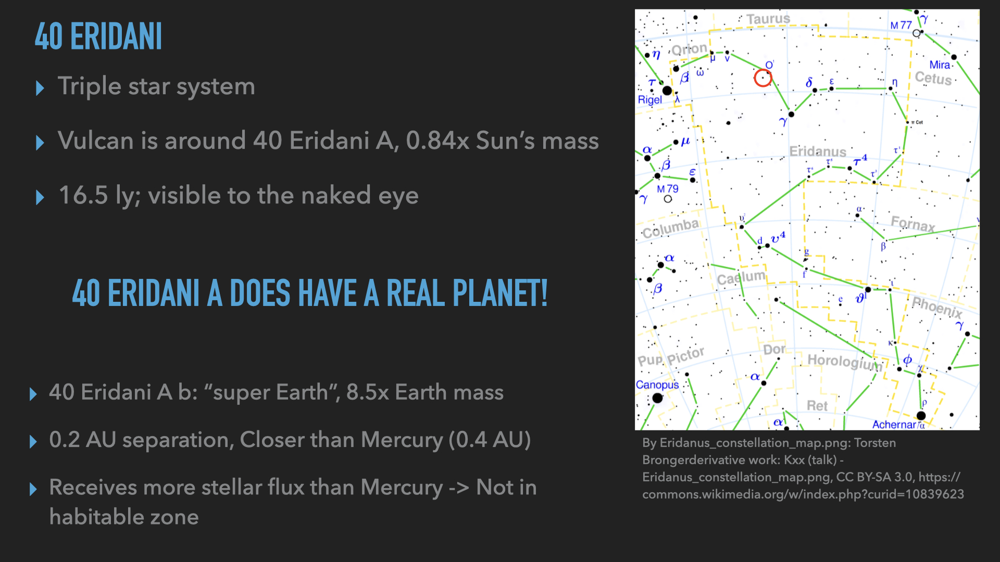
Ok so back to the Star Trek Vulcan. Turns out, it exists! According to Star Trek cannon, and Gene Rodenberry himself, Vulcan orbits 40 Eridani A,
the most massive of a triple star system. Well, 40 Eridani A does have a confirmed known planet! 40 Eridani A b is about 8 times the Earth’s mass,
closer than the separation of Mercury, around a star slightly smaller than our own. So, it’s pretty hot. Definitely not habitable, not even in the
habitable zone. So, not Vulcan, but who knows there might be more planets around 40 Eridani A that haven’t been discovered yet!
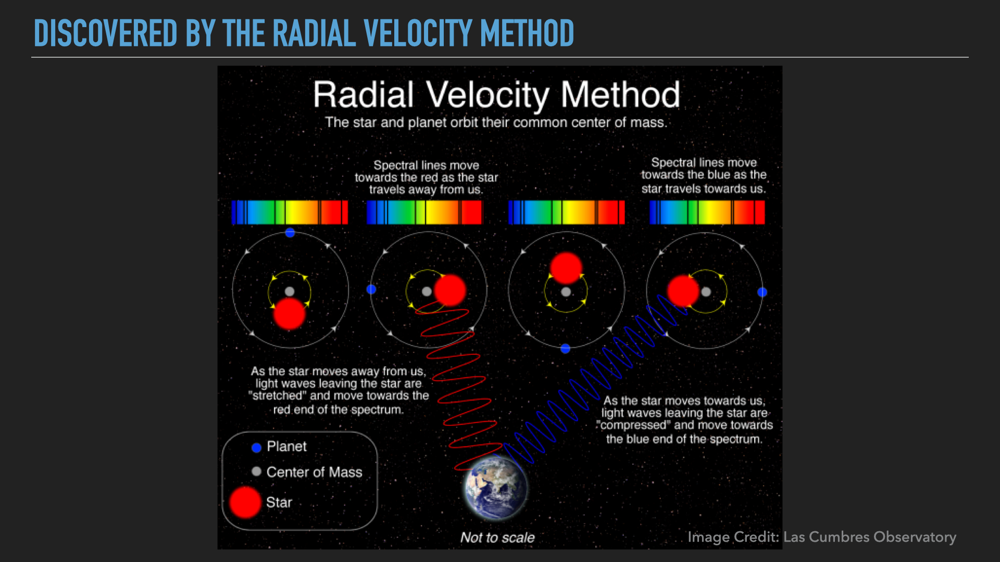
40 Eridani A b was discovered using the radial velocity detection technique. Because the planet has gravity, it tugs on the star as it orbits around,
and makes the star wobble a bit as it goes round and round. Using the Doppler effect, we can measure how the color of light from the star changes as
it moves toward and away from us as the planet tugs on it.
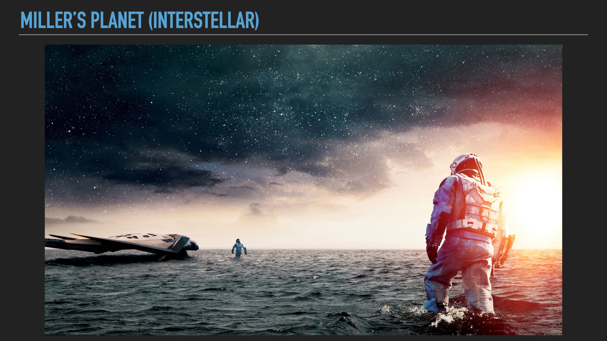 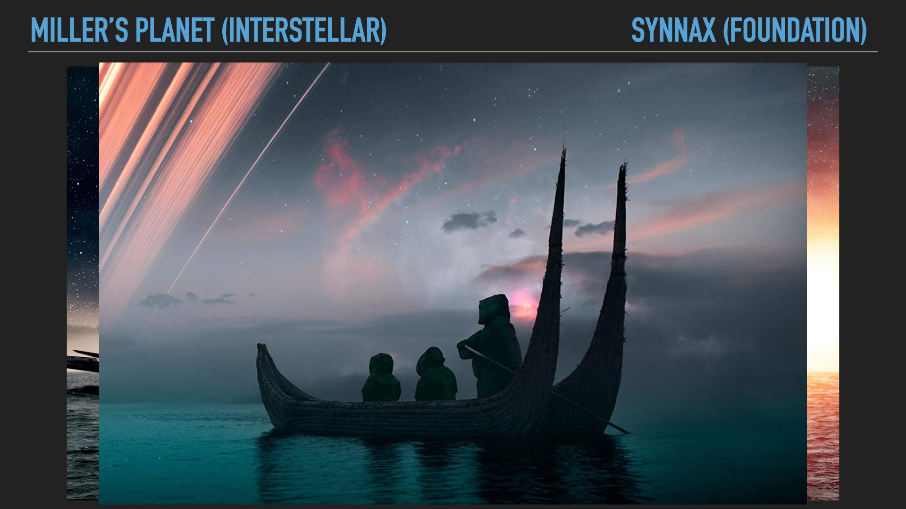
On the left here it’s the water world black hole planet from Interstellar, called Miller's Planet! In the movie, the astronauts land on
this planet which is covered in water, but (somehow?) it is shallow enough to walk around, until the gian tidal wave almost overtakes them
(there is also some great stuff about time dilation with this planet being so close to a black hole, but I don't have enough time for that.)
On the right is an incredibly beautiful
imagining of the waterworld Synnax from Isaac Asimov’s Foundation, as adapted in the Apple TV show! In the show, Synnax became a water world after
a changing climate melted the ice and flooded the whole planet.
I just love the visuals of Synnax in that show, they are breathtaking. So yah we’re talking waterworlds here.
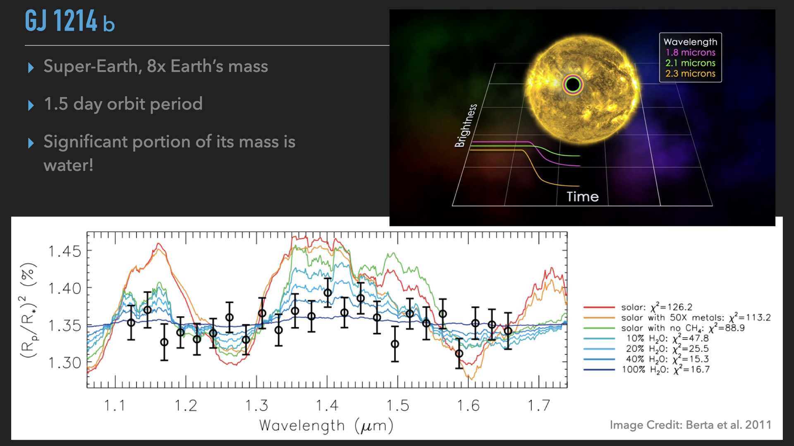
A good candidate for a water world is GJ 1214 b, a super earth discovered via the transit detection method. A neat thing about transiting
planets is that you can start to probe the chemical make up of their atmospheres. Starlight right on the edge of where the planet is blocking
the star shines through a bit of the planet’s atmosphere. This can let you probe the makeup of the atmosphere. Here is a plot of measurements
of the transit at different wavelengths, with model predictions of various atmospheric makeups as the colored lines underneath. The best fitting
model atmospheres are the 40% and 100% water lines. It’s not clear exactly how much of the planet is water, but it’s a significant portion!
There is a lot of water on this planet.
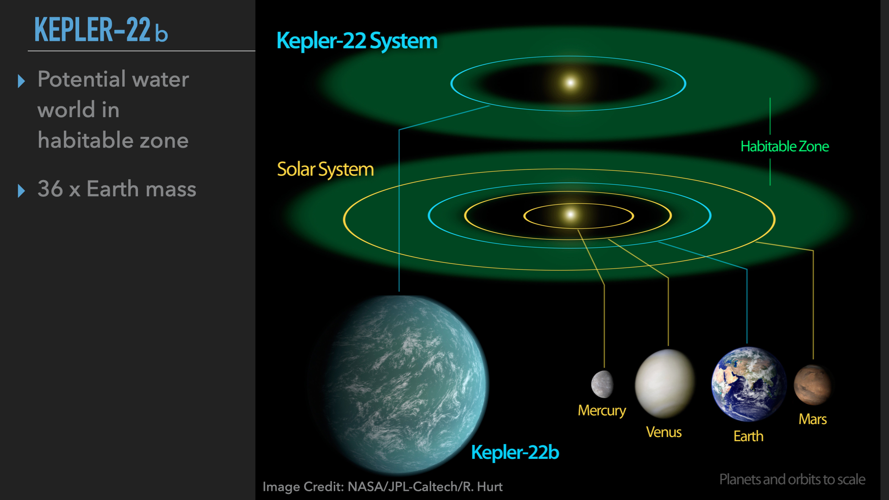
Probably the most well-known water world is Kepler-22 b. It is much larger than Earth, but it’s surface temperature and position in the
habitable zone is very similar to Earths! Unfortunately an Earth-like composition has been ruled out, it’s most likely made up of volatile
gases. But it’s believed it might be an ocean world on the surface, and if it’s mostly ocean with a small rocky core, it is thought it could
harbor life. It’s considered one of the best candidates out of the currently known exoplanets.
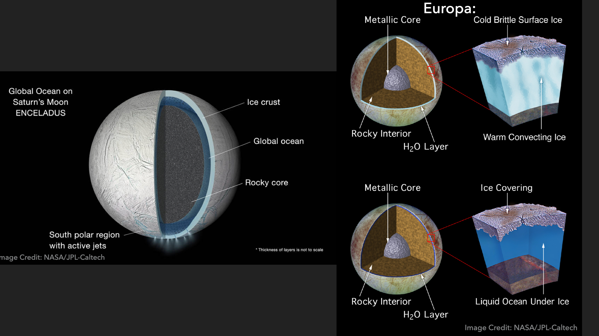
It’s also worth mentioning that water worlds exists in our own solar system. Saturn’s moon Enceladus has a subsurface liquid water ocean
covering the entire thing, below a crust of ice. Jupiter’s moon Europa also has a subsurface ocean of either liquid water or warm convecting ice.
These are considered the best places to look for life beyond Earth, and several current and future spacecraft missions are sent to them with the intention
of looking for trace biosignatures.
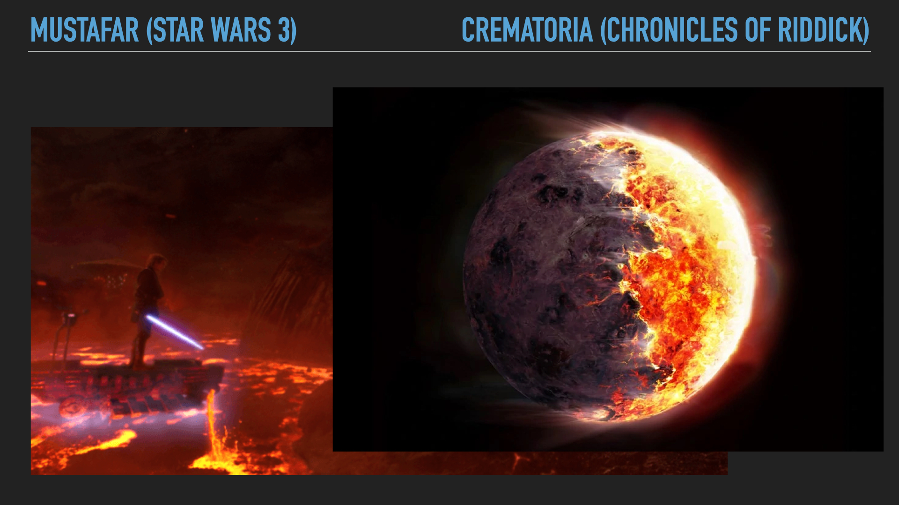
Ok, back to Star Wars (I don't care for Star Wars all that much tbh but they have so many good examples of planets!). This is Mustafar from Star Wars
Episode 3. A lava world.
Another example is the planet Crematoria from the absolute piece of art that is the Chronicles of Riddick. (Just kidding it’s pretty bad, but I
think it’s a lot of fun anyway). Sunrise on Crematoria melted the rockface and boiled liquids, and our heros were forced to race across the surface
to outrun the impending sunrise! So let’s talk about some hot lava worlds.
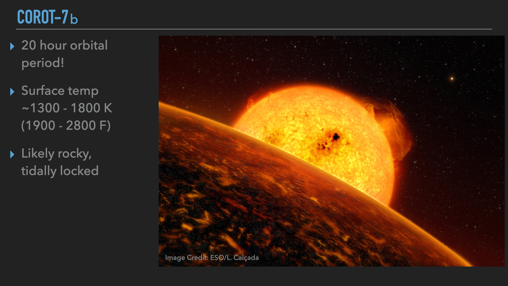
One of the hottest known planets is Corot-7 b, a likely rocky planet with a surface temperature of 1900-2800 F! That’s hot enough to melt silicate rock.
It’s so hot because it is ridiculously close to its star. It’s so close it completes an orbit every 20 hours. Because it’s so close to the star, it’s
likely tidally locked. That means that the same face is always pointing towards the star as it orbits, just like how the moon always faces the same face
towards the Earth. So unlike Crematoria, there’s no sunrise to run away from, but you won’t be standing on the star-facing surface that’s for sure.
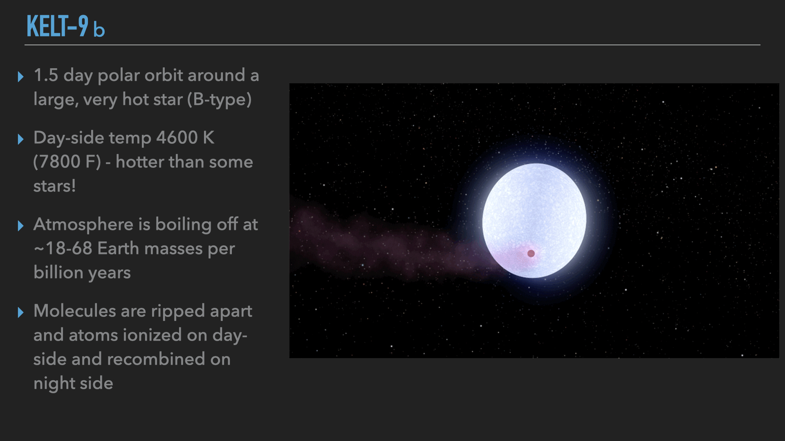
But THE HOTTEST known exoplanet is one of my personal favorites, KELT-9 b. KELT-9 b is a bit farther from it’s star than COROT-7b, completing an orbit
every 1.5 days. But it’s star is a very large, VERY HOT B-type star. The dayside temperature of KELT-9b is 7800 F! That’s hotter than the surface of
some stars!! It’s so hot that molecules and atoms are ripped apart on the dayside and recombine on the night side. The atmosphere is boiling off.
It’s also in a polar orbit, so it orbits along the north-south axis of the star instead of along the equator. Whatever the history of the planet is
the get it into such an extreme orbit, it’s gotta be interesting.
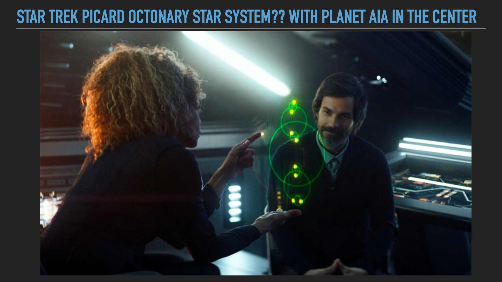
The last sci-fi planet I want to talk about is something I find fascinating from the 1st season of the new Star Trek Picard show. In the show,
aliens constructed an 8-star system, and placed the planet Aia in the center, so the strange star configuration would serve as a beacon to point
people to the important information found on the surface of Aia. Here is a still from the show with the character Raffi showing how the 8-star
system is configured. When this episode aired, many astronomers immediately wondered if such an 8-star system was possible, and could a planet
survive in the center of it?
So believe it or not, we’ve actually observed two 7-star systems! A census of multiplicity rates of over 4000 systems found ~60% of them were singles,
30% binaries, 6% triples, and so on, and 0.04% of systems are septuples. So octuples as of yet, but 0.04% of hundreds of billions is a LOT of stars.
0.04% of 100 billion is 40 million! So octuples and even higher just might exists, even if they’re exceedingly rare.
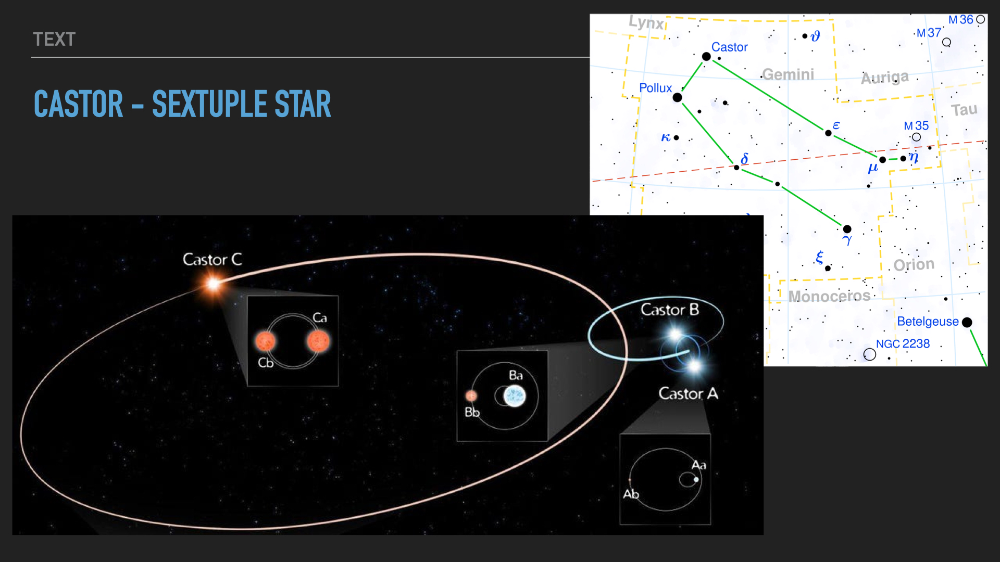
A naked-eye star system called Castor is actually a 6-star system. It’s one of the brightest stars in the Gemini constellation. So you can go
outside and see a sextuple star system any time gemini is up! It’s what’s called a hierarchical system, in that the whole sextuple system is made
up of combinations of smaller binary star systems.
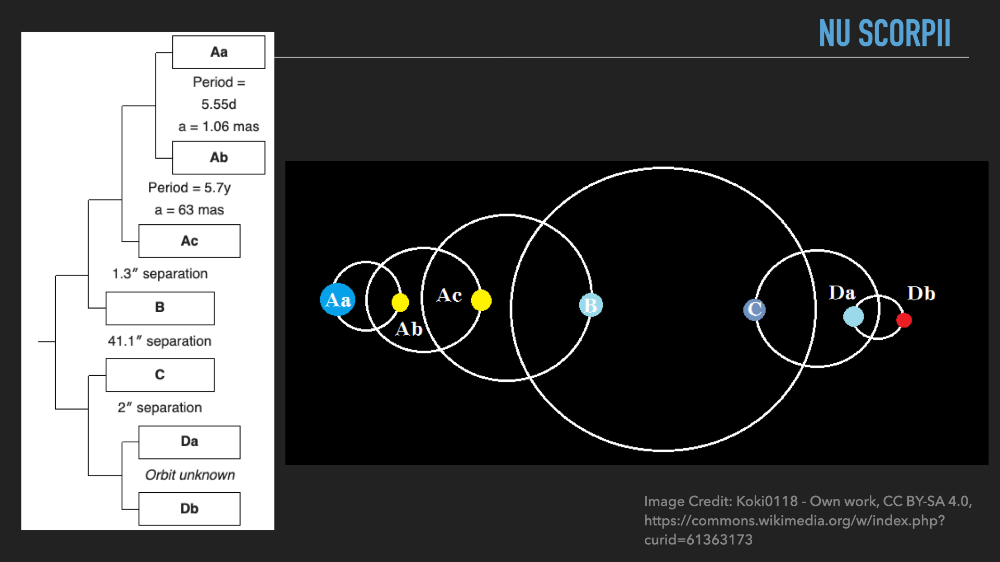
One of the septuple systems is Nu Scorpii, also a hierarchical system. Aa, Ab, and Ac all orbit a common center of mass, which orbits a common
center of mass with B. Da and Db orbit a common center of mass, which orbits with C, and all of those orbit a common center of mass with the As
and B… it gets confusing fast, nomenclature is hard.
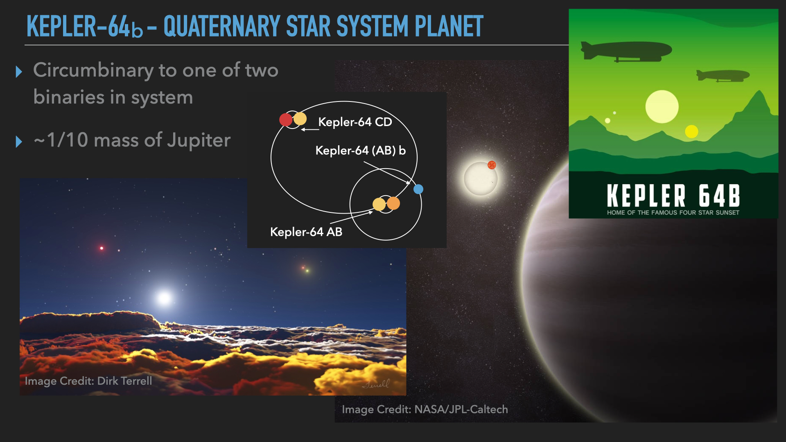
Kepler-64 B is in a quaternary system. It is circumbinary around one pair, which orbits a common center of mass with the other binary pair.
It is one of the highest known stellar multiplicity planets.
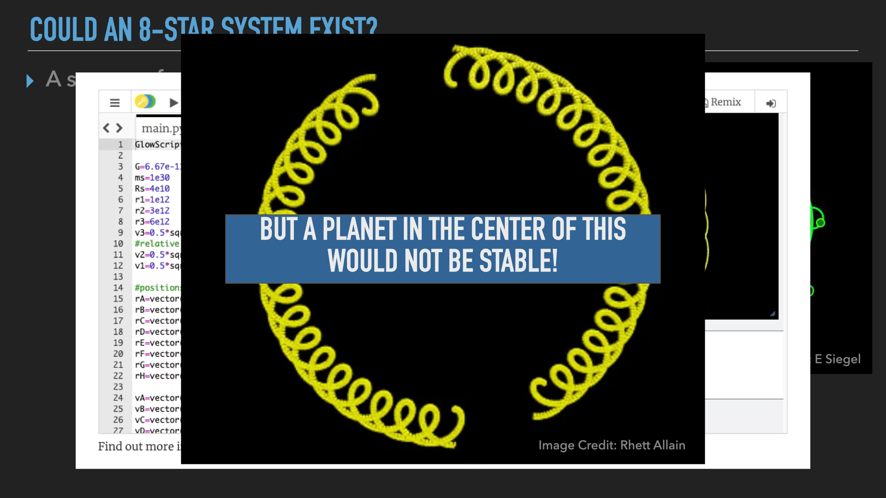
Ok so what about this 8-star system with the planet in the center? As I said astronomers quickly got to work on the feasibility of this.
Astronomer
Ethan
Siegel figured out that the configuration shown in the show would actually be stable for the stars if each binary was closer
than what’s shown, more like this diagram here from his article. Rhett
Allain modeled this configuration in python and let it run to see what
it would look like. After a long time running the model, it eventually looks like this. You can play with his model
yourself here.
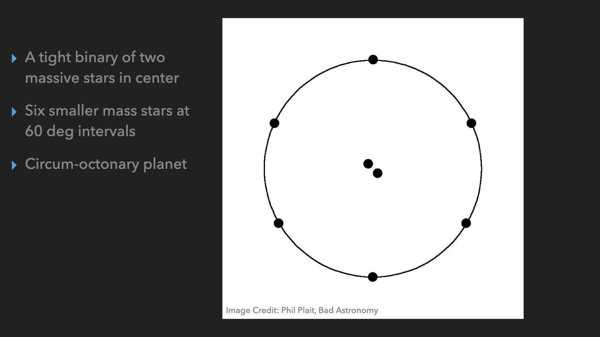
Ok but what about the planet Aia in the center? Well in that hierarchical configuration the center would absolutely not be stable at all, sorry to say. Astronomer Phil Plaitt of the Bad Astronomy blog then asked well ok, what would be a stable configuration for a planet with 8 stars? He came up with something like this. A binary star in the center with 6 equally spaced stars on the same orbit, and the planet orbiting the whole thing. A circumoctonary planet. I highly recommend checking out his article on this, he goes through all the math and rationale behind this non-sense.
Well folks, that’s all I’ve got. There are SO MANY interesting sci-fi worlds I could talk about, like I wanted to talk about Dyson spheres and
Rama and black hole planets and tidally locked planets and so much more. But I have to cut it off somewhere.
I got a lot of questions like "what about Arrakis?" and other well-known planets. Problem is, our technology isn't capable of determining whst the
surface of planets are made up of, so linking Arrakis to a real-life desert world isn't possible yet. We just can't 100% know if a planet is covered
in desert or water or Earth like. We can look for clues, and in some cases rule out some compositions (like with Kepler-22 b). But I just don't
know of a desert world to link to Arrakis, or how we would even look for a desert world. Astronomers, if you know of one let me know!
If you have a sci-fi world that
you are curious about, hit us up on Facebook or
Twitter, and ask about it! I am often the one who sees and responds to those, but if it’s not
me then someone will answer you!
Also also. The second speaker that night was a CAT HISTORIAN and a real character, so check him out too.